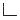

Curriculum Vitae
Guohua Cao
(My full CV is available in pdf format here)
Education
Ph.D. Physical Chemistry, Brown University, May 2005B.Sc. Chemical Physics, University of Science and Technology of China, June 1999
Employment
Research Assistant Professor, Department of Physics and Astronomy, University of North Carolina at Chapel Hill, Jan 2009 - presentPostdoctoral Scholar, Department of Physics and Astronomy, University of North Carolina at Chapel Hill, Jan 2007 - Dec 2008
Postdoctoral Fellow, Department of Chemistry, Brown University, May 2005 - Jan 2007
Graduate Research Assistant, Department of Chemistry, Brown University, Sept 1999 - May 2005
Awards
Honorable Mention Poster Award, SPIE Medical Imaging Conference, 2009UNC Postdoctoral Scholar Award for Research Excellence, 2008
Outstanding Poster Award, NCI Alliance for Nanotechnology in Cancer Investigators Meeting, 2007
Memberships
Sigma Xi Honorable Research Society, 2009 - presentInternational Society for Optical Engineering (SPIE), 2009 - present
American Chemical Society, 2004 - 2008
Academic Genealogy
Paul Scherrer, Ph.D., Physics, ETH, 1916" />Ernst Bleuler, Ph.D., Physics, ETH, 1942 + Karl Lark-Horovitz, Ph.D., Physics, University of Vienna, 1919
" />George J.Goldsmith, Ph.D., Physics, Purdue University, 1955
" />Gerald J. Diebold, Ph.D., Physics, Boston College, 1974
" />Guohua Cao, Ph.D., Physical Chemistry, Brown University, 2005